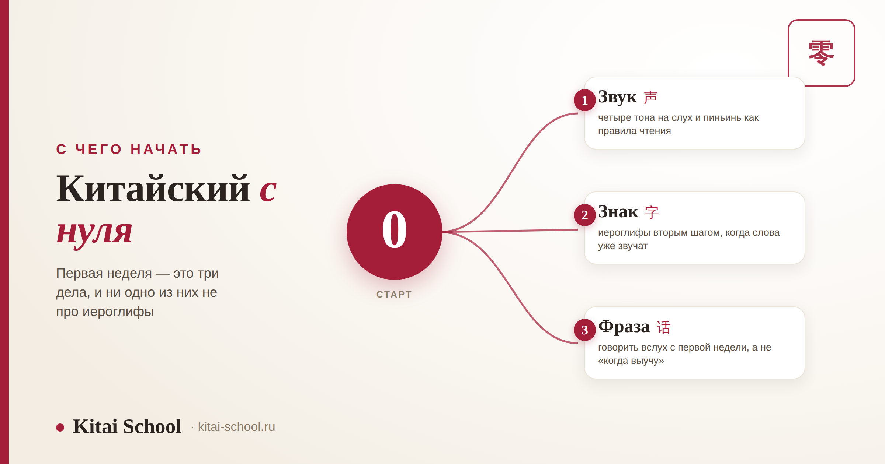
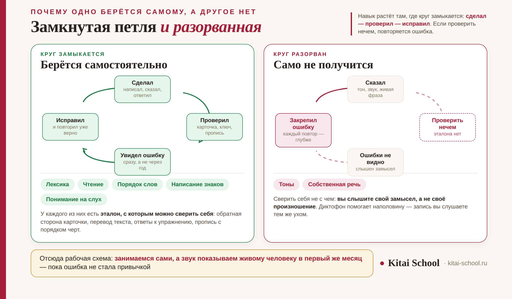

О языке и обучении
Изучение китайского языка с нуля: с чего начать, что берётся самому и где нужен преподаватель


Почти все, кто начинает учить китайский с нуля, спотыкаются об один и тот же вопрос: с чего вообще браться. Иероглифы выглядят непреодолимо, списки слов лежат мёртвым грузом, а приложений столько, что выбор превращается в отдельное занятие. Разберём старт по делу: что делают в первую неделю, что в китайском спокойно берётся самому, а что без живого человека закрепляется с ошибкой.
Первая неделя — это не иероглифы и не список слов, а три вещи: услышать четыре тона, разобрать пиньинь как правила чтения и произнести вслух десяток фраз. Дальше работает простое правило: самому берётся всё, что можно проверить — лексика, чтение, порядок слов, написание знаков. Не берётся то, где проверить нечем: тоны и собственная речь. Набор для старта маленький: словарь, учебник с аудио и карточки. Обещания «150 слов» и «заговорить за три месяца» не врут, но означают не то, что кажется.
Первая неделя: три дела вместо тридцати
Главная ошибка старта — начать со всего сразу. На самом деле в первую неделю делают всего три вещи, и ни одна из них не про иероглифы.
| Что делаем | Зачем именно это | Как понять, что получилось |
|---|---|---|
| 1. Услышать четыре тона | тон в китайском меняет смысл слова, а не интонацию фразы | различаете на слух четыре варианта одного слога |
| 2. Разобрать пиньинь | это правила чтения, а не латиница: буквы читаются не так, как выглядят | читаете незнакомый слог вслух и не гадаете |
| 3. Произнести десяток фраз | речь начинается сразу, иначе накапливается страх открыть рот | говорите приветствие и своё имя без пауз |
И столь же важно, чего в первую неделю не делают: не учат список слов, не садятся прописывать иероглифы и не покупают три учебника разом. Знаки подключают следующим шагом, когда несколько десятков слов уже звучат уверенно — весь маршрут по шагам разобран отдельно, по этапам изучения китайского.
Что берётся самому, а что нет
Здесь обычно и ломается самостоятельное обучение — но не там, где ждут. Дело не в силе воли и не в способностях, а в устройстве обратной связи.
Любой навык растёт по кругу: сделал — проверил — исправил. Если проверить себя нечем, круг разрывается: вы продолжаете повторять, но повторяете ошибку, и с каждым разом она садится прочнее.
| Что осваиваем | Чем проверить себя | Вывод |
|---|---|---|
| Лексика | обратная сторона карточки | берётся самому |
| Чтение | текст с переводом и разбором | берётся самому |
| Порядок слов | ответы к упражнениям | берётся самому |
| Написание знаков | пропись с порядком черт | берётся самому, если сразу с прописью |
| Понимание на слух | расшифровка записи | берётся самому |
| Тоны | нечем: свою ошибку не слышно | нужен живой человек |
| Собственная речь | нечем: некому переспросить | нужен живой человек |

Причина у двух последних строк одна и совсем не очевидная: вы слышите то, что хотели сказать, а не то, что сказали. Диктофон помогает наполовину, потому что и запись вы слушаете тем же ухом. Ошибка в тоне садится за пару недель, а переучивается месяцами — поэтому разумная схема выглядит так: работаем сами, а на постановку звука берём несколько занятий с преподавателем. Что именно там ставят, разобрано в статье о корректировке произношения.
Ко мне пришёл человек, который восемь месяцев занимался сам и делал это на редкость добросовестно: карточки, учебник, ежедневные подходы. Словарный запас у него был как у второго уровня, тексты он читал спокойно. А на первом же занятии выяснилось, что почти все слова он произносит третьим тоном — просто потому, что когда-то так услышал и с тех пор ни разу не получил обратной связи.
Разбирать пришлось не язык, а привычку: восемь месяцев ежедневных повторений сделали ошибку автоматической. На переучивание ушло больше времени, чем ушло бы на постановку тонов в самом начале.
С тех пор всем, кто начинает сам, я говорю одно и то же: занимайтесь самостоятельно сколько угодно, но звук покажите живому человеку в первый же месяц. Не курс, не абонемент — просто пусть кто-то послушает и скажет, что не так. Это самая дешёвая страховка в изучении китайского.
Минимальный набор: словарь, учебник, карточки
Набор для старта маленький, и это хорошая новость. Три инструмента закрывают почти всё, а четвёртый — аудио — обычно идёт в комплекте с учебником.
| Что | Зачем | На что смотреть |
|---|---|---|
| Словарь | найти незнакомый знак, который негде набрать | рукописный ввод пальцем и распознавание камерой. Такое умеет, например, Pleco |
| Учебник | задать порядок: что за чем и в каком объёме | привязка к уровням HSK, аудио носителя, ответы для самопроверки. Этому отвечают «Стандартный курс HSK» и «Новый практический курс китайского языка» |
| Карточки | удерживать выученное, а не проходить заново | интервальное повторение — например, в Anki |
| Аудио | приучить ухо к темпу живой речи | запись носителя к каждому уроку учебника |
И одна оговорка, которая экономит месяцы. Приложение — это инструмент повторения, а не программа обучения. Игра с очками и сериями отлично удерживает лексику, но не задаёт порядка и не ставит звук: можно отыграть длинную серию и не суметь произнести ни одной фразы так, чтобы вас поняли. Поэтому приложение ставят рядом с учебником, а не вместо него.
Про «150 слов» и «три месяца»: что за этими обещаниями стоит
Две формулировки, которые встречаются в каждой второй статье для начинающих. Обе не врут — но означают не то, что читается на первый взгляд.
| Обещание | Что за ним на самом деле |
|---|---|
| «Выучите первые 150 слов» | это объём словаря первого уровня. Но как список он не работает: слово без тона звучит неузнаваемо, а слово без разбора знака не держится в памяти дольше нескольких дней |
| «Заговорите через три месяца» | дойти за три месяца до простых фраз действительно реально. А «выучить китайский» за три месяца — нет, и такие обещания стоит обходить стороной |
Про объём словаря первого уровня и что в него входит — в разборе HSK 1. А сроки честнее считать не по календарю, а по нагрузке: одна и та же цель растягивается от полугода до двух с лишним лет только за счёт числа часов в неделю. Расчёты — в статьях за сколько можно выучить китайский с нуля и статистика часов по уровням.
Куда идти дальше: карта для начинающего
Эта статья отвечает на вопрос «как начать». На остальные вопросы старта у нас есть отдельные разборы — чтобы не искать, собрали их в одном месте.
| Вопрос | Где ответ |
|---|---|
| В каком порядке идут этапы | этапам изучения китайского |
| Сколько это займёт времени | за сколько можно выучить китайский с нуля и статистика часов по уровням |
| Что реально трудно, а что проще, чем кажется | сложно ли учить китайский с нуля |
| Как ставят тоны и трудные звуки | корректировке произношения |
| Как вообще устроены иероглифы | из чего состоит китайская письменность и значение ключей в иероглифах |
| Каким будет первый экзамен | HSK 1 |
| Зачем всё это | зачем учить китайский |
Если коротко сложить всё вместе: начните со звука, подключите знаки вторым шагом и покажите своё произношение живому человеку в первый же месяц. Остальное действительно можно делать самому.
Частые вопросы (FAQ)
С чего начать изучение китайского языка с нуля?
С трёх дел, и ни одно из них не про иероглифы. Первое: научиться слышать разницу между четырьмя тонами на одном слоге — не заучивать, а именно различать на слух. Второе: разобрать пиньинь как правила чтения, потому что читается он не так, как выглядит по-латински. Третье: собрать вслух десяток бытовых фраз. Через неделю у вас будет не запас слов, а работающий слух и способность произнести что-то узнаваемое. Иероглифы подключают следующим шагом, когда несколько десятков слов уже звучат уверенно.
Можно ли выучить китайский с нуля самостоятельно?
Частично — и важно понимать, где проходит граница. Всё, что можно проверить самому, берётся самостоятельно прекрасно: лексика по карточкам, чтение с переводом, порядок слов по упражнениям с ответами, написание знаков по прописи. А вот тоны и собственная речь — нет: у них нет способа самопроверки, потому что вы слышите то, что хотели сказать, а не то, что сказали. Ошибка в тоне закрепляется за пару недель, а переучивается месяцами. Разумный вариант — самостоятельная работа плюс несколько занятий с преподавателем именно на постановку звука.
Какие приложения и учебники нужны для старта?
Набор небольшой: словарь, учебник и карточки для повторения. Словарь нужен такой, где можно нарисовать незнакомый знак пальцем и найти его по написанию — такую возможность даёт, например, Pleco. Учебник лучше брать привязанный к уровням HSK, чтобы был понятный порядок и аудио носителя: этому отвечают «Стандартный курс HSK» и «Новый практический курс китайского языка». Карточки удобно вести в программе с интервальным повторением вроде Anki. Главное помнить: приложение — это инструмент повторения, а не программа обучения.
Правда ли, что достаточно выучить первые 150 слов?
Это объём словаря HSK 1, и как первый шаг он выглядит логично, а работает плохо. Слово, выученное без тона, произносится неузнаваемо, а выученное без разбора знака не удерживается в памяти дольше нескольких дней. Поэтому продуктивнее не гнаться за списком, а брать слова небольшими порциями вместе со звуком и разбором иероглифа. Тогда те же 150 слов остаются с вами, а не осыпаются через месяц.
Реально ли заговорить по-китайски за три месяца?
Смотря что называть «заговорить». Дойти за три месяца до уровня HSK 1–2 и объясняться простыми фразами — вполне реально при регулярных занятиях. А вот «выучить китайский» за три месяца нельзя, и обещания обратного — повод насторожиться. Полезнее ставить срок не по календарю, а по нагрузке: одна и та же цель растягивается от полугода до двух лет только за счёт того, сколько часов в неделю вы занимаетесь.
Сколько заниматься в неделю, чтобы был результат?
Важнее не количество часов, а их распределение. Короткие занятия каждый день работают заметно лучше, чем одно длинное в выходные: язык держится на регулярности повторений, а не на объёме за раз. Практический ориентир для начала — заниматься понемногу, но ежедневно, и отдельно выделять время на слушание. Если выбирать между «час раз в неделю» и «пятнадцать минут каждый день», второе даст больше.
Если хотите начать сразу правильно, приходите на бесплатное пробное занятие. За урок мы послушаем ваше произношение, покажем, что уже звучит, а что нет, и наметим порядок на первые месяцы — дальше вы сможете идти самостоятельно, зная, что именно проверять.
Или напишите слово СТАРТ нашему менеджеру в Telegram — подскажем, с чего начать именно вам.
Дальше по теме: этапам изучения китайского; за сколько можно выучить китайский с нуля; сложно ли учить китайский с нуля; корректировке произношения; HSK 1; зачем учить китайский; как проходит урок в группе — групповые занятия; занятия — онлайн-курсы и индивидуальные уроки.
Источники
- Официальный сайт экзамена chinesetest.cn — состав словаря и требования уровней HSK.
- Практика Kitai School — работа с начинающими и разбор типичных ошибок самостоятельного старта.
- Учебные материалы, привязанные к уровням HSK: «Стандартный курс HSK», «Новый практический курс китайского языка».
Начните со звука — остальное приложится. 加油！